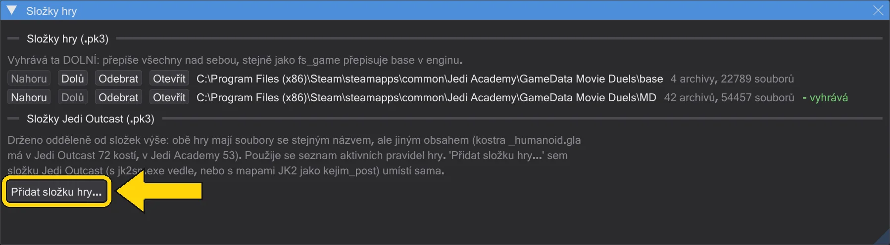
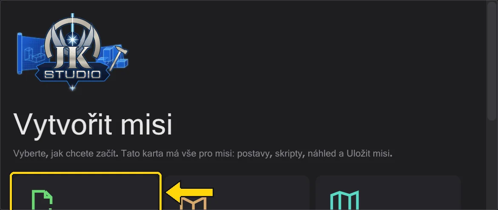

Začínáme
Rozbalte, řekněte programu, kde je hra, otevřete misi. To je celé nastavení.
Instalace#
- 1
Stáhněte nejnovější
JK Studio-…-windows-x64.zipze stránky vydání - pod Assets, ne "Source code", který žádný program neobsahuje - a rozbalte ho do libovolné složky, například vedle hry. Do Windows se nic neinstaluje. - 2
Spusťte
jkstudio.exe. Při spuštění program hledá na GitHubu novější verzi a nabídne ji; bez dotazu se nic nestahuje (přepínač je v Nápověda).
JK Studio-…-windows-x64.exe ze stejného vydání běží samostatně: při prvním spuštění uloží svá data do %APPDATA%\behaved\data\base. Příručka je jen v zipu. Windows SmartScreen může napoprvé varovat, protože program není podepsaný: klikněte na Další informace → Přesto spustit.Řekněte mu, kde je hra#
Mapy, modely, zvuky a skripty hry jsou v archivech .pk3 hry. Otevřete Úpravy → Složky hry a přidejte složky hry pomocí Přidat složku hry: nejdřív base, pak mod jako Movie Duels (MD). Dolní složka vyhrává, přesně jako fs_game ve hře přepisuje base.

Něco otevřete#
Cest dovnitř je několik. Úvodní stránka na kartě Mise (zobrazená, dokud není otevřena žádná mapa) nabízí novou misi, misi z .pk3, jen mapu a vaše poslední mise. Z nabídky:
- Mise - Soubor → Načíst misi vybere
.pk3a otevře misi s její mapou, entitami a všemi skripty na kartách. Viz Mise. - Skript - Soubor → Otevřít otevře
.txtnebo zkompilované.ibiz disku. - Vaše poslední mise - Soubor → Poslední mise znovu otevře celou misi jedním kliknutím.

Jazyk#
Program mluví anglicky, německy, čínsky, japonsky, španělsky a česky; text, který jazyk ještě nemá, se zobrazí anglicky. Začne v jazyce Windows; změníte ho v Zobrazení → Jazyk. Názvy příkazů a hodnoty zůstávají tak, jak je píše hra (affect, SET_NAVGOAL), protože právě to jde do souboru.
handbuch vedle jkstudio.exe a funguje bez internetu. Nápověda → Interaktivní tutoriály ukáže první kroky přímo v programu, po jednom zvýrazněném kliknutí.